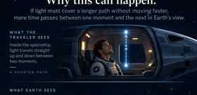
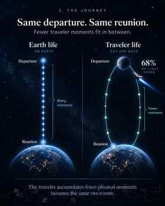

Inside the ship
The traveler sees the flash take the direct path between the two events.
Scroll through the story. The graphics do the explaining; the text only fills in the gaps.

They are together, the same age, and their lives are in sync.

They begin together and later stand together again. The traveler can accumulate less lived time in between.
Assume 30 years pass on Earth before they reunite. The brief turnaround is ignored here so the speed effect stays easy to see.
Imagine a flash leaving one point in the ship and reaching another. Those are just two real physical events.

The traveler sees the flash take the direct path between the two events.

The ship moves while the flash is in flight, so those same two events are separated by a longer path.
The light does not make the traveler age differently. It reveals the deeper rule: the amount of elapsed time itself depends on the path a person takes through spacetime.

Aging is physical change: heartbeats, brain activity, chemistry, cell division. If less time elapses along the traveler's path, less of all of it happens before reunion.
Each person experiences their own life normally. When their paths separate and later reconnect, their totals can be different. That is time dilation.
No. Heartbeats, thoughts, chemistry, movement, and every other local process remain normal relative to one another. Nothing inside the traveler announces that “less time” is passing.
During steady motion each can describe the other's processes as slower. The complete round trip is different because the traveler turns around and changes motion. Once they reunite side by side, both agree on how much time each person actually experienced.